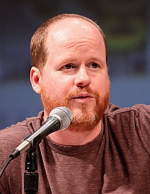

Marvel's The Avengers[5] (classified under the name Marvel Avengers Assemble in the United Kingdom and Ireland),[1][6] or simply The Avengers, is a 2012 American superhero film based on the Marvel Comics superhero team of the same name. Produced by Marvel Studios and distributed by Walt Disney Studios Motion Pictures,[a] it is the sixth film in the Marvel Cinematic Universe (MCU). Written and directed by Joss Whedon, the film features an ensemble cast including Robert Downey Jr., Chris Evans, Mark Ruffalo, Chris Hemsworth, Scarlett Johansson, and Jeremy Renner as the Avengers, alongside Tom Hiddleston, Stellan Skarsgård, and Samuel L. Jackson. In the film, Nick Fury and the spy agency S.H.I.E.L.D. recruit Tony Stark, Steve Rogers, Bruce Banner, Thor, Natasha Romanoff, and Clint Barton to form a team capable of stopping Thor's brother Loki from subjugating Earth.
The film's development began when Marvel Studios received a loan from Merrill Lynch in April 2005. After the success of the film Iron Man in May 2008, Marvel announced that The Avengers would be released in July 2011 and would bring together Stark (Downey), Rogers (Evans), Banner (at the time Edward Norton),[b] and Thor (Hemsworth) from Marvel's previous films. With the signing of Johansson as Romanoff in March 2009, Renner as Barton in June 2010, and Ruffalo replacing Norton as Banner in July 2010, the film was pushed back for a 2012 release. Whedon was brought on board in April 2010 and rewrote the original screenplay by Zak Penn. Production began in April 2011 in Albuquerque, New Mexico, before moving to Cleveland, Ohio in August and New York City in September. The film has more than 2,200 visual effects shots.
The Avengers premiered at the El Capitan Theatre in Los Angeles on April 11, 2012, and was released in the United States on May 4, as the final film in Phase One of the MCU. The film received praise for Whedon's direction and screenplay, visual effects, action sequences, acting, and musical score. The film grossed over $1.5 billion worldwide, setting numerous box office records and becoming the third-highest-grossing film of all time at the time of its release and the highest-grossing film of 2012, as well as the first Marvel production to generate $1 billion in ticket sales. In 2017, The Avengers was featured as one of the 100 greatest films of all time in an Empire magazine poll. It received a nomination for Best Visual Effects at the 85th Academy Awards, among numerous other accolades. Three sequels have been released: Avengers: Age of Ultron (2015), Avengers: Infinity War (2018), and Avengers: Endgame (2019)
The Asgardian Loki encounters the Other, the leader of an extraterrestrial race known as the Chitauri. In exchange for retrieving the Tesseract,[c] a powerful energy source of unknown potential, the Other promises Loki an army with which he can subjugate Earth. Nick Fury, director of the espionage agency S.H.I.E.L.D., arrives at a remote research facility, where physicist Dr. Erik Selvig is leading a team experimenting on the Tesseract. The Tesseract suddenly activates and opens a wormhole, allowing Loki to reach Earth. Loki steals the Tesseract and uses his scepter to enslave Selvig and other agents, including Clint Barton, to aid him.
In response, Fury reactivates the "Avengers Initiative". Agent Natasha Romanoff heads to Kolkata to recruit Dr. Bruce Banner to trace the Tesseract through its gamma radiation emissions. Fury approaches Steve Rogers to retrieve the Tesseract, and Agent Phil Coulson visits Tony Stark to have him check Selvig's research. Loki is in Stuttgart, where Barton steals the iridium needed to stabilize the Tesseract's power, leading to a confrontation with Rogers, Stark, and Romanoff that ends with Loki's surrender. While Loki gets escorted to S.H.I.E.L.D., his adoptive brother Thor arrives and frees him, hoping to convince him to abandon his plan and return to Asgard. Stark and Rogers intervene and Loki is taken to S.H.I.E.L.D.'s flying aircraft carrier, the Helicarrier, where he is imprisoned.
The Avengers become divided over how to approach Loki and the revelation that S.H.I.E.L.D. plans to harness the Tesseract to develop powerful weapons as a deterrent against hostile extraterrestrials. As they argue, Loki's agents attack the Helicarrier, and the stress causes Banner to transform into the Hulk. Stark and Rogers work to restart the damaged engine, and Thor attempts to stop the Hulk's rampage. Romanoff knocks Barton unconscious, breaking Loki's mind control. Loki escapes after killing Coulson and Fury uses Coulson's death to motivate the Avengers into working as a team. Loki uses the Tesseract and a wormhole generator Selvig built to open a wormhole above Stark Tower to the Chitauri fleet in space, launching his invasion.
Rogers, Stark, Romanoff, Barton, Thor, and the Hulk rally in defense of New York City, and together the Avengers battle the Chitauri. The Hulk beats Loki into submission. Romanoff makes her way to the generator, where Selvig, freed from Loki's mind control, reveals that Loki's scepter can shut down the generator. Fury's superiors from the World Security Council attempt to end the invasion by launching a nuclear missile at Midtown Manhattan. Stark intercepts the missile and takes it through the wormhole toward the Chitauri fleet. The missile detonates, destroying the Chitauri mothership and disabling their forces on Earth. Stark's suit loses power and he goes into freefall, but the Hulk saves him, while Romanoff uses Loki's scepter to close the wormhole. In the aftermath, Thor returns with Loki and the Tesseract to Asgard, where Loki will face their justice.
In a mid-credits scene, the Other confers with his master[d] about the failed attack on Earth.
A self-described genius, billionaire, playboy, and philanthropist with an electromechanical suit of armor of his own invention. Downey was cast as part of his four-picture deal with Marvel Studios, which included Iron Man 2 (2010) and The Avengers.[12] He said he initially pushed Whedon to make Stark the lead: "Well, I said, 'I need to be in the opening sequence. I don't know what you're thinking, but Tony needs to drive this thing.' He was like, 'Okay, let's try that.' We tried it and it didn't work, because this is a different sort of thing, the story and the idea and the theme is the theme, and everybody is just an arm of the octopus."[13] About the character's evolution from previous films, Downey said, "In Iron Man, which was an origin story, he was his own epiphany and redemption of sorts. Iron Man 2 is all about not being an island, dealing with legacy issues and making space for others. . . In The Avengers, he's throwing it down with the others".[14] Downey earned $50 million from the film, "once box-office bonuses and backend compensation [were] factored in".[15]
A World War II veteran who was enhanced to the peak of human physicality by an experimental serum and frozen in suspended animation before waking up in the modern world. Evans was cast as part of a deal to star in three Marvel films, in addition to The Avengers.[16] Evans said that Steve Rogers is much darker in The Avengers: "It's just about him trying to come to terms with the modern world. You've got to imagine, it's enough of a shock to accept the fact that you're in a completely different time, but everybody you know is dead. Everybody you cared about. . . He was a soldier, obviously, everybody he went to battle with, all of his brothers in arms, they're all dead. He's just lonely. I think in the beginning it's a fish-out-of-water scene, and it's tough. It's a tough pill for him to swallow. Then comes trying to find a balance with the modern world."[13] Regarding the dynamic between Rogers and Tony Stark, Evans said, "I think there's certainly a dichotomy—this kind of friction between myself and Tony Stark, they're polar opposites. One guy is flash and spotlight and smooth, and the other guy is selfless and in the shadows and kind of quiet and they have to get along. They explore that, and it's pretty fun."[17] Evans earned $2–3 million for the film.[15]
A genius scientist who, because of exposure to gamma radiation, transforms into a monster when enraged or agitated. Ruffalo, who was considered to play Banner in The Incredible Hulk (2008) before Edward Norton took the role,[18] was cast after negotiations between Marvel and Norton broke down.[19] About replacing Norton, Ruffalo said, "I'm a friend of Ed's, and yeah, that wasn't a great way for all that to go down. But the way I see it is that Ed has bequeathed this part to me. I look at it as my generation's Hamlet." About the character, he said, "He's a guy struggling with two sides of himself—the dark and the light—and everything he does in his life is filtered through issues of control. I grew up on the Bill Bixby TV series, which I thought was a really nuanced and real human way to look at the Hulk. I like that the part has those qualities".[20] Regarding the Hulk's place on the team, Ruffalo said, "He's like the teammate none of them are sure they want on their team. He's a loose cannon. It's like, 'Just throw a grenade in the middle of the group and let's hope it turns out well!"[21] This is the first production in which the actor playing Banner also plays the Hulk. Ruffalo told New York magazine, "I'm really excited. No one's ever played the Hulk exactly; they've always done CGI. They're going to do the Avatar stop-action, stop-motion capture. So I'll actually play the Hulk. That'll be fun".[22] The 3D model used to create the Hulk's body was modeled after Long Island bodybuilder and male stripper Steve Romm, while the Hulk's face was modeled after Ruffalo.[23] To create the Hulk's voice, Ruffalo's voice was blended with those of Lou Ferrigno and others;[24] however, the Hulk's only speaking line ("Puny god.") was provided solely by Ruffalo.[25] Ruffalo earned $2–3 million for the film.[15]
The crown prince of Asgard, based on the Norse mythological deity of the same name. Hemsworth was cast as part of a multiple movie deal.[26] He had previously worked with Joss Whedon on The Cabin in the Woods (2011).[27] Hemsworth said that he was able to maintain the strength he built up for Thor (2011) by increasing his food intake, consisting of chicken breasts, fish, steak, and eggs every day. When asked exactly how much, Hemsworth said, "My body weight in protein pretty much!"[28] He remarked that Thor's motivation "is much more of a personal one, in the sense that it's his brother that is stirring things up. Whereas everyone else, it's some bad guy who they've gotta take down. It's a different approach for me, or for Thor. He's constantly having to battle the greater good and what he should do vs. it's his little brother there. . . I've been frustrated with my brothers at times, or family, but I'm the only one who is allowed to be angry at them. There's a bit of that."[13] Hemsworth earned $2–3 million for the film.[15]
A highly trained spy working for S.H.I.E.L.D.[29] About the character and her relationship with Hawkeye, Johansson said, "Our characters have a long history. They've fought together for a long time in a lot of battles in many different countries. We're the two members of this avenging group who are skilled warriors – we have no superpowers. Black Widow is definitely one of the team, though. She's not in the cast simply to be a romantic foil or eye candy. She's there to fight, so I never felt like I was the only girl. We all have our various skills and it feels equal".[14] Regarding her training, Johansson said, "Even though Iron Man 2 was 'one-for-them,' I'd never done anything like that before. I'd never been physically driven in something, or a part of something so big. For The Avengers, I've spent so many months training with our stunt team, and fighting all the other actors, it's crazy. I do nothing but fight—all the time."[30] Johansson earned $4–6 million for the film.[15]
A master archer working as an agent for S.H.I.E.L.D.[31][32] Renner said it was a very physical role and that he trained physically and practiced archery as much as possible in preparation.[33] About the role, Renner said, "When I saw Iron Man, I thought that was a really kick-ass approach to superheroes. Then they told me about this Hawkeye character, and I liked how he wasn't really a superhero; he's just a guy with a high skill set. I could connect to that."[14] Regarding Hawkeye's sniper mentality, Renner said, "It's a lonely game. He's an outcast. His only connection is to Scarlett's character, Natasha. It's like a left hand/right hand thing. They coexist, and you need them both, especially when it comes to a physical mission."[14] Renner said Hawkeye is not insecure about his humanity. "Quite the opposite, he's the only one who can really take down the Hulk with his [tranquilizer-tipped] arrows. He knows his limitations. But when it comes down to it, there has to be a sense of confidence in any superhero."[13] Renner earned $2–3 million for the film.[15]
Thor's adoptive brother and nemesis, based on the Norse mythological deity of the same name.[26] About his character's evolution from the film Thor, Hiddleston said, "I think the Loki we see in The Avengers is further advanced. You have to ask yourself the question: How pleasant an experience is it disappearing into a wormhole that has been created by some kind of super nuclear explosion of his own making? So I think by the time Loki shows up in The Avengers, he's seen a few things."[34] About Loki's motivations, Hiddleston said, "At the beginning of The Avengers, he comes to Earth to subjugate it and his idea is to rule the human race as their king. And like all the delusional autocrats of human history, he thinks this is a great idea because if everyone is busy worshipping him, there will be no wars so he will create some kind of world peace by ruling them as a tyrant. But he is also kind of deluded in the fact that he thinks unlimited power will give him self-respect, so I haven't let go of the fact that he is still motivated by this terrible jealousy and kind of spiritual desolation."[35]
An astrophysicist and friend of Thor under Loki's control who is studying the Tesseract's power.[36][37] Regarding Loki's control over Selvig, Skarsgård said, "Well with the scene we did in Thor, it was like Loki, one way or the other, entered Erik's mind. And in Avengers, you will see more clarity in how Loki is using Erik's mind."[37] About his role, he said, "[My character] is of importance but the size of the role is not big."[37]
The director of S.H.I.E.L.D. who was revealed in previous films to be coordinating the "Avengers Initiative". Jackson was brought to the project with a deal containing an option to play the character in up to nine Marvel films.[38] Jackson said he does more in The Avengers than in any of the previous films: "You don't have to wait until the end of the movie to see me". About the role, Jackson said, "It's always good to play somebody [who] is a positive in society as opposed to somebody who is a negative. . . I tried to make him as honest to the story and as honest to what real-life would seem." Jackson compared the character to Ordell Robbie in Jackie Brown, calling him "a nice guy to hang out with. You just don't want to cross him".[39] Jackson earned $4–6 million for the film.[15]
Clark Gregg appears as Phil Coulson, a S.H.I.E.L.D. agent who oversees many of the division's field operations.[40] Gregg was cast as part of a multi-picture deal with Marvel.[41] Gregg said his role was expanded in The Avengers: "[What] Agent Coulson had become in terms of the import of this particular story, and how important his job is in bringing the Avengers together, it kind of felt a little surreal, like somebody was playing a prank and that wasn't the real script. But it wasn't, it was the real thing, I got to show up and do that stuff, and it felt like such an amazing payoff to what the journey had been and the fact I had been doing it for five years."[42] Gregg said Whedon provided insight into his character's backstory, particularly about Coulson being a fan of Captain America.[42] Cobie Smulders appears as Maria Hill, a high-ranking S.H.I.E.L.D. agent who works closely with Nick Fury.[43] Smulders, whom Joss Whedon once considered for his unproduced live-action Wonder Woman film, was selected from a short list of potential actresses including Morena Baccarin. Smulders' deal would integrate her into nine films.[44][45] Regarding her preparation, Smulders said, "I hired this amazing black-ops trainer to teach me how to hold a gun, take me to a shooting range, how to hit, how to hold myself, how to walk and basically how to look. I don't do a ton of fighting in the movie, which is why I wasn't offered a trainer, but I wanted to look like I had the ability to."[46] On relating to the character, Smulders said, "I can relate to her being a mom and being a businesswoman and trying to work full-time and raising a family and having a career. We're asked to do a lot of things these days. I feel she is just all about her job and keeping things going."[47]
Gwyneth Paltrow and Maximiliano Hernández reprise their roles from previous MCU films as Pepper Potts and Jasper Sitwell, respectively.[48] Paul Bettany returns to voice J.A.R.V.I.S.[48] Frequent Whedon collaborator Alexis Denisof portrays "the Other", and Damion Poitier portrays his master, Thanos (unnamed in the film), in a post-credits scene.[49] Powers Boothe and Jenny Agutter appear as members of the World Security Council later revealed to be Gideon Malick and Councilwoman Hawley.[50][51] Avengers co-creator Stan Lee has a cameo appearance in a news report.[52] Harry Dean Stanton cameos as a security guard, and Polish film director Jerzy Skolimowski appears as Georgi Luchkov, Romanoff's interrogator.[53] Warren Kole has a brief role as a S.H.I.E.L.D. bridge tech who is caught playing Galaga.[54] Enver Gjokaj, who later went on to play Daniel Sousa in the series Agent Carter, appears as a police officer.[55]
Ideas for a film based on the Avengers began in 2003,[57] with Avi Arad, the CEO of Marvel Studios, first announcing plans to develop the film in April 2005, after Marvel Enterprises declared independence by allying with Merrill Lynch to produce a slate of films that would be distributed by Paramount Pictures.[58] Marvel discussed their plans in a brief presentation to Wall Street analysts; the studio's intention was to release individual films for the main characters—to establish their identities and familiarize audiences with them—before merging the characters together in a crossover film.[59] Screenwriter Zak Penn, who wrote The Incredible Hulk, became attached to the film in 2006,[57] and was hired by Marvel Studios to write the film in June 2007.[60] In the wake of the 2007–2008 Writers Guild of America strike, Marvel negotiated with the Writers Guild of America to ensure that it could create films based on its comic book counterparts, including Captain America, Ant-Man and The Avengers.[61] After the successful release of Iron Man (2008) in May, the company set a July 2011 release date for The Avengers.[62] In September 2008, Marvel Studios reached an agreement with Paramount—an extension of a previous partnership—which gave the company distribution rights for five future Marvel films.[63]
Casting began in October 2008 with Downey's signing.[12] Though Don Cheadle was also reported to be reprising his Iron Man 2 role of War Machine for The Avengers, he later stated that he did not think the character would appear in the film.[12][64] At the same time, two major prospects occurred for Marvel: Jon Favreau was brought in as an executive producer for the film,[12] and the company signed a long-term lease with Raleigh Studios to produce three other big-budget films—Iron Man 2, Thor, and Captain America: The First Avenger (2011)—at their Manhattan Beach, California complex.[65] In February 2009, Samuel L. Jackson signed a nine-picture deal with Marvel Entertainment to play Nick Fury in Iron Man 2 and other films.[38] In September 2009, Edward Norton, who played Bruce Banner in The Incredible Hulk stated that he was open to returning in the film.[66] The next month, executive producer Jon Favreau stated that he would not direct the film, but would "definitely have input and a say". Favreau also expressed concerns, stating, "It's going to be hard, because I was so involved in creating the world of Iron Man, and Iron Man is very much a tech-based hero, and then with Avengers you're going to be introducing some supernatural aspects because of Thor [...] [Mixing] the two of those works very well in the comic books, but it's going to take a lot of thoughtfulness to make that all work and not blow the reality that we've created".[67] In March 2009, actress Scarlett Johansson replaced Emily Blunt in portraying Natasha Romanoff in Iron Man 2, a deal that subsequently attached her to The Avengers.[29] The following day, Marvel announced that the film's release date had been pushed back to May 4, 2012, almost a full year later.[68] Chris Hemsworth and Tom Hiddleston joined the film's cast in June, returning as Thor and Loki, respectively.[26]
In July 2009, Penn talked about the crossover process, stating, "My job is to kind of shuttle between the different movies and make sure that finally we're mimicking that comic book structure where all of these movies are connected. . . There's just a board that tracks 'Here's where everything that happens in this movie overlaps with that movie'. . . I'm pushing them to do as many animatics as possible to animate the movie, to draw boards so that we're all working off the same visual ideas. But the exigencies of production take first priority".[69] At first, Penn tried to reduce Thor's role in the script because he had doubts about the character's ability to succeed on film. He changed his mind once Hemsworth was cast as Thor.[70] The film had always intended to use Loki as its villain, but Penn noted that early discussion had considered using Red Skull.[71]
In January 2010, Marvel Studios chief Kevin Feige was asked if it would be difficult to meld the fantasy of Thor with the high-tech science fiction in Iron Man and The Avengers. "No," he said, "because we're doing the Jack Kirby/Stan Lee/Walt Simonson/J. Michael Straczynski Thor. We're not doing the blow-the-dust-off-of-the-old-Norse-book-in-your-library Thor. And in the Thor of the Marvel Universe, there's a race called the Asgardians. And we're linked through this Tree of Life that we're unaware of. It's real science, but we don't know about it yet. The 'Thor' movie is about teaching people that".[72] In March, it was reported that Penn had completed the first draft of the script, and that Marvel editor-in-chief Joe Quesada and Avengers comic-book writer Brian Michael Bendis had received copies.[73] Also in March, Chris Evans accepted an offer to play Captain America in three films including The Avengers.[16]
By April 2010, Joss Whedon was close to completing a deal to direct the film and to rework Penn's script,[75] and was officially announced in July 2010.[76] On the hiring, Arad stated: "My personal opinion is that Joss will do a fantastic job. He loves these characters and is a fantastic writer [...] It's part of his life so you know he is going to protect it [...] I expect someone like him is going to make the script even better".[77] Feige added, "I've known Joss for many years. We were looking for the right thing and he came in and met on it [...] we want[ed] to find a director that's on the verge of doing something great, as we think Joss is."[78] Whedon stated at the 2010 San Diego Comic-Con International, that what drew him to the film is that he loves how "these people shouldn't be in the same room let alone on the same team—and that is the definition of family".[79]
When Whedon received Penn's draft, he told Feige he felt the studio did not "have anything" and they should "pretend this draft never happened".[80] Part of Whedon's issue was the lack of character connections in Penn's draft, which necessitated Whedon to begin "at square one".[57] Whedon went on to write a five-page treatment of his plan for the film, and created the tagline "Avengers: Some Assembly Required", riffing on the "Avengers Assemble" slogan from the comic books. Marvel quickly began working to sign Whedon to write and direct, only stipulating that he include the Avengers against Loki, a battle among the heroes in the middle, a battle against the villains at the end, and he get the film done for its May 2012 release.[80] The script would go through "a lot of insane iterations of what might be" according to Whedon. Whedon explained there was a point when it was not certain Johansson would star in the film, so he "wrote a huge bunch of pages starring The Wasp",[57] and wanted Zooey Deschanel to play the character.[81] He also was "worried that one British character actor [(Hiddleston)] was not enough to take on Earth's mightiest heroes, and that we'd feel like we were rooting for the overdog. So I wrote a huge draft with Ezekiel Stane, Obadiah Stane's son, in it." Once all of the actors were "locked in place the movie stayed on mission." Whedon noted that the characters used do not have the same issue, unlike the X-Men. He felt "these guys just don't belong together" before realizing their interactions could be like The Dirty Dozen (1967). Whedon also referenced Dr. Strangelove (1964), The Abyss (1989), His Girl Friday (1940), and Black Hawk Down (2001). Whedon would ultimately share final screenplay credit with Penn, though Whedon noted he "fought" for sole credit and was "very upset about it." Penn felt the two "could have collaborated more, but that was not his choice. He wanted to do it his way, and I respect that."[57]
The casting process continued into much of 2010, with the additions of Jeremy Renner,[31] Mark Ruffalo,[19] and Clark Gregg.[40] Ruffalo replaced Edward Norton, whom Marvel declined to have back.[82] "We have made the decision to not bring Ed Norton back to portray the title role of Bruce Banner in The Avengers," stated Feige. "Our decision is definitely not one based on monetary factors, but instead rooted in the need for an actor who embodies the creativity and collaborative spirit of our other talented cast members. The Avengers demands players who thrive working as part of an ensemble, as evidenced by Robert, Chris H, Chris E, Samuel, Scarlett, and all of our talented casts. We are looking to announce a name actor who fulfills these requirements, and is passionate about the iconic role in the coming weeks."[83] In response, Norton's agent Brian Swardstrom decried Feige's statement, calling it "purposefully misleading" and an "inappropriate attempt to paint our client in a negative light".[84] In October 2014, Norton claimed it was his own decision never to play Hulk again because he "wanted more diversity" with his career, and did not want to be associated with only one character.[85]
In August 2010, it was reported that Paramount Pictures and Marvel Studios were planning to start shooting in February.[86] In October 2010, Grumman Studios in Bethpage, New York[87] and the Steiner Studios in Brooklyn, New York City, were announced as filming locations,[88] with set construction slated to begin in November,[87] but as Whedon later explained, "Originally we were supposed to be in Los Angeles, then for a short period we were supposed to be in New York, and then somehow we ended up in Albuquerque."[5] Also that October, Walt Disney Studios agreed to pay Paramount at least $115 million for the worldwide distribution rights to Iron Man 3 (2013) and The Avengers.[89] The deal also allowed Paramount to continue to collect the 8 percent box office fee it would have earned for distributing the film and a marquee credit—placement of the company's production logo on marketing materials and the film's opening titles. As a result, the onscreen production credit reads "Marvel Studios presents in association with Paramount Pictures" though the film is solely owned, distributed, financed, and marketed by Disney. Paramount's Epix retained pay TV rights.[7]
In December 2010, Governor of New Mexico Bill Richardson and Marvel Studios Co-president Louis D'Esposito announced The Avengers would film primarily in Albuquerque, New Mexico, with principal photography scheduled for April through September 2011. Parts of the film were also scheduled to be shot in Michigan,[90] but a plan to film in Detroit ended after Governor Rick Snyder issued a budget proposal that would eliminate a film tax incentive.[91] Three months later in March, Governor of Ohio John Kasich announced before Mayor Frank G. Jackson's State of the City address that The Avengers would film in Cleveland.[92]
Concept illustrator and designer of Iron Man's Mark VII armor Phil Saunders stated that "Joss Whedon was looking for something that had the 'cool' factor of the suitcase suit [from Iron Man 2], while still being a fully armored, heavy duty suit that could take on an army in the final battle." To that end, Saunders borrowed ideas that had been proposed in Iron Man 2 as well as some ideas that had been abandoned in Iron Man and merged them together in a modular suit that has big ammo packets on the arms and a backpack.[93] The Science & Entertainment Exchange also provided science consultation for the film.[94]
Casting reached its final stages the following year. In February 2011, Cobie Smulders was cast in the role of Maria Hill,[45] after participating in screen tests conducted by Marvel for the role of a key S.H.I.E.L.D. member, who Samuel L. Jackson described as Nick Fury's sidekick.[44] Over the successive months, the film's cast expanded to include Stellan Skarsgård,[36] Paul Bettany,[95] and Gwyneth Paltrow.[96] Paltrow was cast at Downey's insistence; prior to this, Whedon had not intended the film to include supporting characters from the heroes' individual films, commenting, "You need to separate the characters from their support systems in order to create the isolation you need for a team."[97]